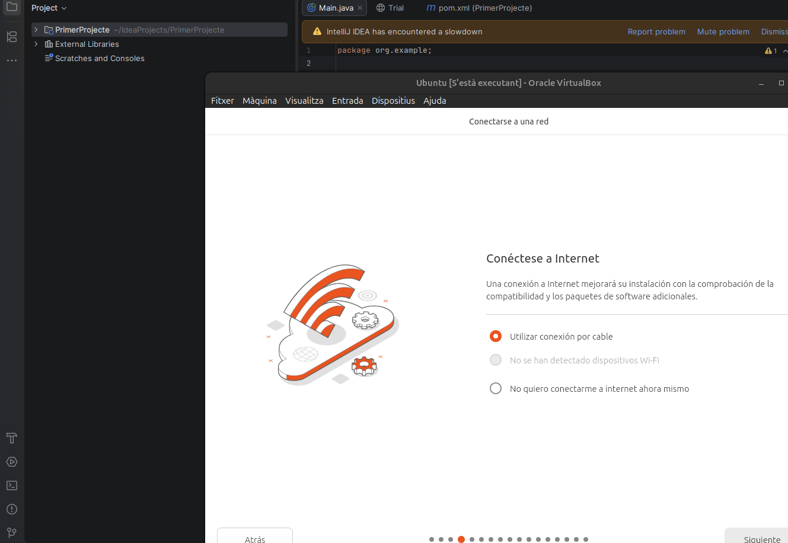
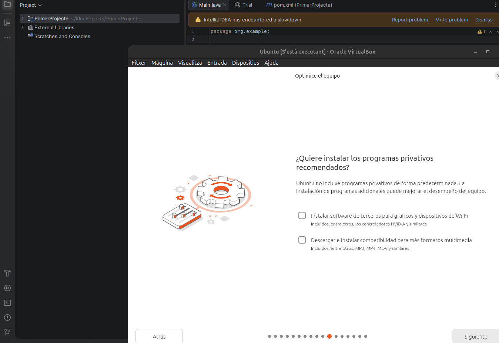
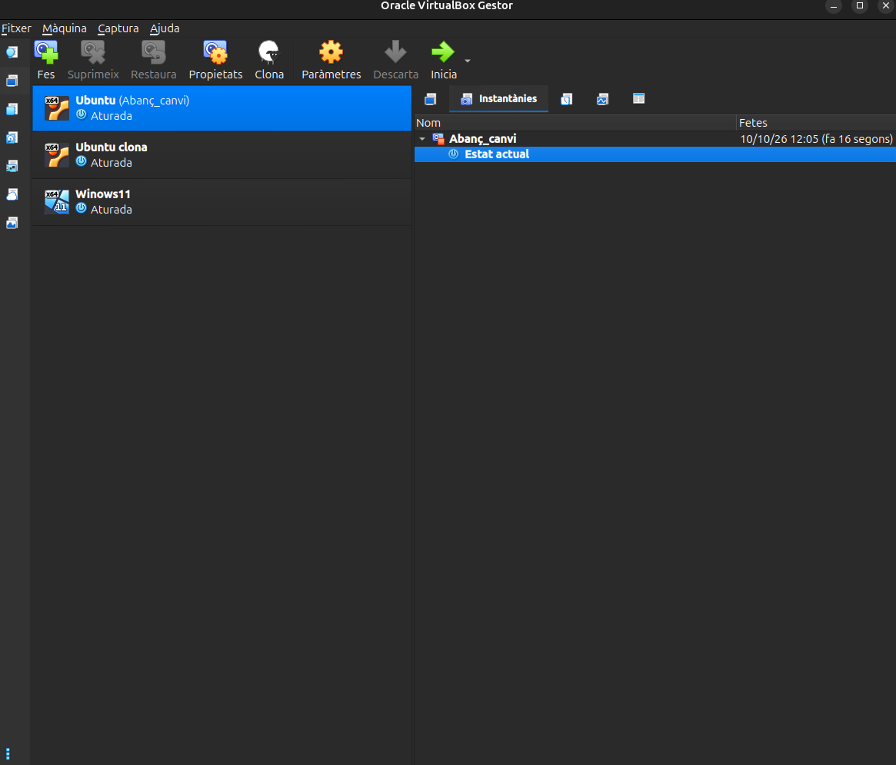
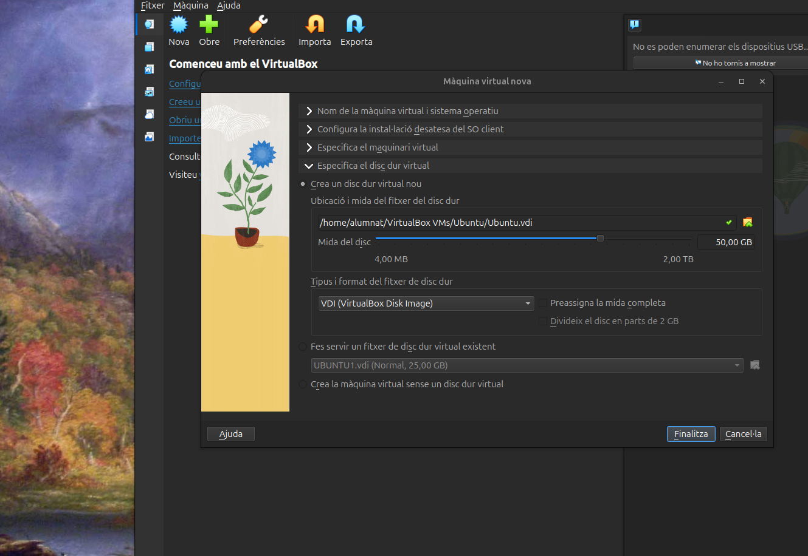
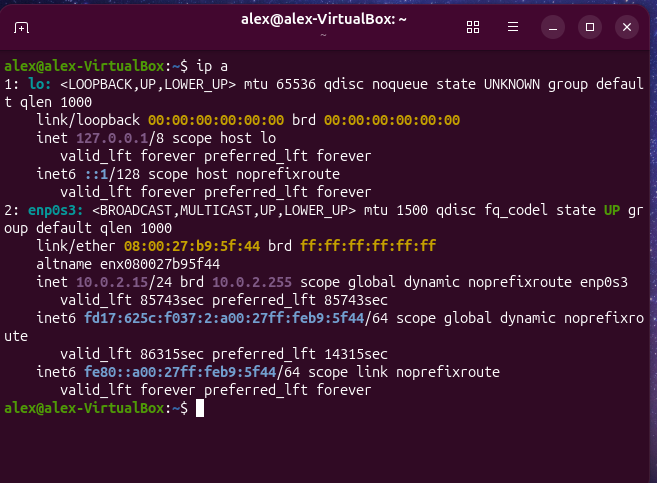

1. Instal·lació del sistema operatiu
Arrencada des del suport d'instal·lació i recorregut per l'assistent. El pas del disc és irreversible, així que revisa bé la destinació.
- Arrencar des del USB o la imatge ISO.
- Triar l'idioma i la distribució de teclat.
- Esperar que finalitzi la còpia d'arxius i reiniciar.







↑ Tornar a l'índex
2. Punts de restauració
Com crear i recuperar un punt de restauració abans de fer canvis importants al sistema.
- Crear un punt de restauració (o una instantània).
- Fer un canvi de prova al sistema.
- Restaurar i comprovar que s'ha desfet.

↑ Tornar a l'índex
3. Particions
Estructura de particions del disc i punts de muntatge triats durant la instal·lació.
- Revisar el disc amb
lsblk o fdisk -l.
- Descriure cada partició i el seu sistema d'arxius.
- Comprovar el muntatge amb
df -h.


↑ Tornar a l'índex
4. Virtualització
Creació de la màquina virtual a VirtualBox i configuració dels recursos assignats.
- Crear la màquina virtual i assignar memòria i CPU.
- Afegir el disc virtual i la imatge ISO.
- Instal·lar els complements d'amfitrió.



↑ Tornar a l'índex
5. Gestors d'arrencada
Funcionament del gestor d'arrencada i com es tria el sistema operatiu a l'inici.
- Identificar el gestor instal·lat (per exemple, GRUB).
- Consultar la configuració d'arrencada.
- Comprovar l'ordre d'arrencada dels sistemes.


↑ Tornar a l'índex
6. Xarxa bàsica
Configuració de xarxa mínima per poder actualitzar el sistema i instal·lar programari.
- Comprovar l'adreça IP amb
ip a.
- Configurar una IP estàtica si el servei ho requereix.
- Verificar la connectivitat amb
ping.


↑ Tornar a l'índex
7. Comandes generals
Resum de les ordres bàsiques de terminal que s'han fet servir durant el sprint.
- Navegació:
pwd, ls, cd.
- Fitxers:
cp, mv, rm, mkdir.
- Informació del sistema:
uname -a, whoami.

↑ Tornar a l'índex
8. Instal·lacions d'aplicacions
Instal·lació de programari addicional amb el gestor de paquets i comprovació del resultat.
- Actualitzar els repositoris amb
apt update.
- Instal·lar un paquet amb
apt install.
- Comprovar que l'aplicació s'executa correctament.
↑ Tornar a l'índex